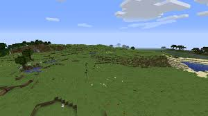
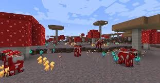

Biomas
Essa página apresentará os biomas presentes no mundo de Minecraft.
Cada mundo criado no jogo, é único e gerado aleatoriamente, porém os biomas tem padrões que podem ser identificados.
Floresta
O Bioma de Floresta: O Clássico do Minecraft
A Floresta é um dos biomas mais antigos e tradicionais do Minecraft. Sendo um dos primeiros ambientes criados para o jogo, ela carrega uma grande dose de nostalgia para os jogadores veteranos e serve como uma excelente escola para os iniciantes.
Principais Características:
* Vegetação Densa: O bioma é marcado por uma alta densidade de árvores, sendo o lar principal dos clássicos Carvalhos e das Bétulas. O chão é coberto por uma grama verde e vibrante, frequentemente decorada com flores como dentes-de-leão e papoulas.
* Refúgio para Iniciantes: Por ser um bioma extremamente comum, é um dos locais mais frequentes para o *spawn* (nascimento) inicial do jogador. É considerado um dos melhores lugares para começar a jogar, pois oferece madeira em abundância para as primeiras ferramentas e abrigos.
* Fauna Rica: A densidade da floresta abriga uma grande variedade de criaturas passivas. É muito fácil encontrar porcos, vacas, ovelhas e galinhas, o que garante uma fonte rápida de alimento. Além disso, é o habitat natural dos lobos, permitindo que o jogador consiga seu primeiro animal de estimação logo cedo.
* Perigos Noturnos: Apesar de ser acolhedora de dia, a copa densa das árvores pode criar áreas de sombra onde *mobs* hostis, como zumbis e esqueletos, conseguem sobreviver durante o dia, exigindo atenção do jogador ao explorar.

Planícies
O Bioma de Planície: O Paraíso dos Construtores
As Planícies são um dos biomas mais amigáveis e procurados do Minecraft. Seu relevo plano e a facilidade de locomoção tornam este ambiente perfeito tanto para iniciantes quanto para jogadores experientes focados em projetos e grandes construções.
Principais Características:
* Relevo Plano e Aberto: O horizonte limpo e sem grandes elevações é o seu maior atrativo. O jogador gasta muito menos tempo terraplanando (nivelando o terreno) para construir sua base, grandes plantações ou sistemas complexos de *redstone*.
* Paraíso Equestre: Este é um dos poucos biomas onde cavalos e burros surgem naturalmente, tornando-se o lugar ideal para encontrar sua primeira montaria rápida para explorar o mundo. Animais comuns, como ovelhas, porcos e vacas, também passeiam livremente por lá.
* Flora e Recursos: Embora tenha poucas árvores (geralmente pequenos carvalhos), as Planícies são salpicadas por várias espécies de flores. Essa combinação faz com que seja muito fácil encontrar colmeias de abelhas penduradas nos galhos. Existe também uma variação belíssima do bioma chamada Planície de Girassóis.
* Vilas e Saqueadores: É um dos melhores biomas para encontrar Vilas, o que facilita muito o comércio e a sobrevivência nos primeiros dias. Porém, é preciso ter atenção no horizonte, pois os temidos Postos Avançados dos Saqueadores (Pillagers) também costumam se estabelecer nessas áreas abertas.

Deserto
O Bioma de Deserto: O Desafio das Areias
O Deserto é um bioma quente e implacável no universo de Minecraft, composto por planícies e colinas de areia e arenito. É um ambiente de extremos: altamente perigoso para jogadores recém-nascidos, mas incrivelmente recompensador para aqueles que buscam aventura e recursos exclusivos.
Principais Características:
* Paisagem Árida: A vegetação é extremamente escassa, limitando-se a cactos, que podem ser usados para defesa e corantes, e arbustos mortos. Além disso, é um bioma onde nunca chove, mantendo o céu sempre limpo.
* Sobrevivência Extrema: Nascer em um Deserto é um desafio clássico do jogo. Sem árvores por perto, o jogador precisa agir rápido para encontrar uma Vila do Deserto ou correr para o bioma vizinho mais próximo para conseguir madeira e fazer suas primeiras ferramentas.
* Estruturas e Tesouros: O grande atrativo da areia são os segredos que ela esconde. O bioma é famoso pelas Pirâmides do Deserto (que guardam baús com itens raros sob o risco de explodir), Vilas do Deserto, poços abandonados e até fósseis gigantes enterrados.
* Fauna e Ameaças Exclusivas: A vida aqui é adaptada ao calor. Você pode encontrar coelhos do deserto e, nas vilas, os camelos (ótimos para montaria em dupla). Nos combates, o perigo fica por conta dos *Husks* (Zumbis do Deserto), uma variante do zumbi comum que não queima no sol e aplica o efeito de Fome a quem for atingido.

Selva(Jungle)
O Bioma de Selva: A Exuberância do Minecraft
A Selva (Jungle) é um dos biomas mais raros, vibrantes e imponentes do jogo. Conhecida por sua vegetação extremamente densa e árvores colossais, ela oferece uma experiência de exploração única, repleta de recursos exclusivos e mistérios antigos escondidos sob a folhagem fechada.
Principais Características:
* Vegetação Gigantesca: O bioma é dominado por imensas Árvores da Selva que tocam as nuvens. O ambiente é rico em recursos que só crescem lá, como favas de cacau, melancias, trepadeiras úteis para escalada e extensos bosques de bambu em algumas variações do bioma.
* Fauna Exótica: A Selva abriga animais fascinantes que não são encontrados em nenhum outro lugar. É o habitat natural dos coloridos papagaios, das tímidas jaguatiricas (ocelots) e dos adoráveis pandas, que passam o dia mastigando bambu.
* Templos Antigos: Escondidas no meio do mato, você pode encontrar estruturas misteriosas feitas de pedras musgosas. Os Templos da Selva guardam baús com tesouros valiosos, mas exigem muita cautela, pois são protegidos por armadilhas de flechas ativadas por fios e quebra-cabeças com alavancas.
* Navegação Desafiadora: O chão da selva é coberto por arbustos densos, folhas e relevo acidentado, tornando a locomoção terrestre muito difícil. Para explorar de forma eficiente, o jogador frequentemente precisa abrir caminho cortando folhagens ou viajar por cima, pulando pelas copas das árvores.

Taiga
O Bioma de Taiga: A Floresta de Pinheiros do Minecraft
A Taiga é um bioma frio e rústico, caracterizado por suas densas florestas de pinheiros e um clima mais ameno. É um ambiente que transmite uma sensação de natureza selvagem e acolhedora, sendo um dos favoritos dos jogadores que adoram construir cabanas de madeira e bases com estilo medieval ou campestre.
Principais Características:
* Vegetação Rústica: A paisagem é dominada pelos Pinheiros (Spruce), cuja madeira escura é muito valorizada na construção. O solo costuma ser coberto por samambaias e, principalmente, por Arbustos de Frutas Doces (Sweet Berries), que servem como uma ótima fonte inicial de comida.
* Fauna Especial: Além de abrigar animais comuns, a Taiga é o lar das ágeis e noturnas raposas, que adoram caçar galinhas e carregar itens na boca. É também um dos melhores biomas para encontrar matilhas de lobos para domesticar e coelhos saltitando entre as árvores.
* Variações Gigantes e Nevadas: O bioma possui subvariantes incríveis, como a Taiga Nevada, coberta de branco, e a imponente Taiga de Árvores Gigantes, onde o solo é formado pelo fértil bloco de podzol e decorado com pedras musgosas espalhadas pelo chão.
* Desafios Ocultos: Embora pareça pacífica e possua suas próprias Vilas da Taiga, a exploração exige certo cuidado. Correr desatentamente pelos arbustos de frutas doces causará dano e lentidão ao jogador, tornando fugas de monstros noturnos um pouco mais arriscadas neste terreno.

Oceanos
O Bioma de Oceano: O Vasto Mundo Subaquático do Minecraft
Os Oceanos cobrem uma gigantesca parte do mundo de Minecraft, escondendo um universo inteiro debaixo d'água. Explorar suas profundezas é uma aventura rica e essencial, cheia de mistérios, vida marinha colorida e perigos abissais que exigem preparo do jogador.
Principais Características:
* Diversidade de Climas: Os oceanos não são todos iguais. Eles variam desde os Oceanos Quentes, repletos de vibrantes recifes de corais, pepinos-do-mar e peixes tropicais, até os implacáveis Oceanos Congelados, onde a superfície é dominada por blocos de gelo e imensos icebergs flutuantes.
* Fauna Aquática: Mergulhar nessas águas revela uma vida riquíssima. Você encontrará tartarugas, lulas brilhantes e cardumes de bacalhau e salmão. O grande destaque são os golfinhos, criaturas brincalhonas que podem guiar o jogador até tesouros e conceder um bônus temporário de velocidade de nado.
* Segredos Submersos: O fundo do mar é um paraíso para exploradores. É muito comum encontrar Naufrágios e Ruínas Subaquáticas que guardam mapas do tesouro escondido. O maior desafio, porém, é o imponente Monumento do Oceano, um enorme templo de prismarinho que esconde blocos de ouro e esponjas úteis.
* Ameaças Profundas: Além do desafio constante de gerenciar o fôlego para não se afogar (caso não tenha poções ou encantamentos), os oceanos abrigam inimigos perigosos. O jogador precisa ter cuidado com os Afogados (zumbis aquáticos que podem atirar tridentes mortais) e os temíveis Guardiões, que protegem os monumentos com poderosos raios laser.

Montanhas
O Bioma de Montanhas: Os Picos Majestosos do Minecraft
As Montanhas (ou Picos) são biomas imponentes que desafiam os limites de altura do mundo de Minecraft. Com visuais deslumbrantes e terrenos íngremes, elas oferecem um cenário épico para construções audaciosas e escondem recursos valiosos tanto em suas encostas quanto em seus cumes gelados.
Principais Características:
* Relevo Extremo: As montanhas alcançam as maiores altitudes do jogo, muitas vezes tocando ou ultrapassando as nuvens. O terreno acidentado é composto por pedra, cascalho e neve, exigindo muita cautela na escalada para evitar quedas fatais.
* Riqueza Mineral: Este é o bioma perfeito para quem busca riquezas. As montanhas são o principal local onde se pode minerar Esmeraldas, a preciosa moeda de troca das vilas, além de frequentemente exporem grandes veios de carvão e ferro direto nas paredes rochosas.
* Habitantes das Alturas: A vida selvagem aqui é rústica e adaptada aos penhascos. Você encontrará grupos de lhamas passeando tranquilamente e as ágeis cabras saltitando pelos picos (mas tenha cuidado, pois elas adoram dar cabeçadas e empurrar jogadores desatentos).
* Picos Congelados e Perigos Frios: Nas maiores elevações, os cumes são completamente brancos. Nessas áreas de frio extremo, é preciso ter muita atenção com a Neve Fofa (Powder Snow), um bloco ilusório no qual o jogador pode afundar e congelar, a menos que esteja equipado com botas de couro.

Campos de cogumelo
O Bioma de Campos de Cogumelo: O Refúgio Raro do Minecraft
Os Campos de Cogumelo (Mushroom Fields) formam o bioma mais raro e seguro de todo o Minecraft. Geralmente encontrados como ilhas isoladas no meio de vastos oceanos, eles oferecem um visual exótico e um tanto alienígena, sendo o verdadeiro sonho de consumo para jogadores que buscam paz e tranquilidade absolutas para suas bases.
Principais Características:
* Paisagem Fúngica: Esqueça a grama e as árvores convencionais. O chão deste bioma é coberto por Micélio, um bloco roxeado que emite pequenas partículas cinzas. Em vez de florestas, a paisagem é dominada por Cogumelos Gigantes (vermelhos e marrons), que podem ser cortados para obter mais cogumelos.
* A Exclusiva Coguvaca: A única criatura que nasce naturalmente neste bioma é a Coguvaca (Mooshroom), uma variante adorável da vaca comum que possui cogumelos brotando de suas costas. Ela é extremamente valiosa, pois o jogador pode usar uma tigela nela para obter ensopado de cogumelos infinito, garantindo que você nunca passe fome.
* Segurança Absoluta: O maior atrativo desta ilha é a sua regra de geração única: nenhum mob hostil pode nascer aqui. Seja na superfície durante a noite escura ou nas cavernas profundas abaixo do bioma, zumbis, creepers ou esqueletos simplesmente não aparecem, tornando-o o local mais pacífico do jogo.
* Desafio de Recursos: Apesar de ser o lugar mais seguro do jogo e oferecer comida farta, a sobrevivência inicial pode ser complicada. Como não há madeira nativa no bioma, o explorador precisará trazer suas próprias mudas de árvores de outros lugares para cultivar e conseguir construir ferramentas e baús.

Cavernas
O Bioma de Cavernas: O Vasto Submundo do Minecraft
As Cavernas formam a espinha dorsal da experiência de sobrevivência e mineração no Minecraft. O que antes eram apenas túneis escuros de pedra, hoje se transformou em um ecossistema subterrâneo colossal e complexo, com seus próprios biomas únicos, abismos profundos e perigos que testam a coragem de qualquer explorador.
Principais Características:
* Cavernas Exuberantes (Lush Caves): Um verdadeiro oásis subterrâneo cheio de vida. O teto e o chão são cobertos por musgo e folhas, iluminados pelas belas Bagas Brilhantes (Glow Berries). Além disso, é o único lugar do jogo onde você encontrará os adoráveis axolotes nadando em pequenos lagos.
* Cavernas de Espeleotemas (Dripstone Caves): Um ambiente rústico e pontiagudo, dominado por grandes formações de estalactites e estalagmites. É preciso ter cuidado redobrado, pois cair sobre essas pedras afiadas (ou deixar que caiam em você) pode ser fatal. É um excelente local para encontrar enormes veios de minério de cobre.
* A Escuridão Profunda (Deep Dark): Localizado nas profundezas do mundo (nas camadas negativas), este bioma aterrorizante é coberto por blocos de Sculk. É o lar das ruínas das Cidades Ancestrais e do temível Warden, uma criatura incrivelmente forte que é cega, mas caça os invasores pelo som e pelas vibrações de seus passos.
* Riquezas e Abismos: Explorar o subterrâneo é a chave para o progresso. Quanto mais fundo você desce, passando da pedra comum para a escura e resistente Ardósia Profunda (Deepslate), maiores são as chances de encontrar os preciosos Diamantes. No entanto, o desafio aumenta com aquíferos gigantes, imensos lagos de lava e hordas de monstros ocultos na escuridão.